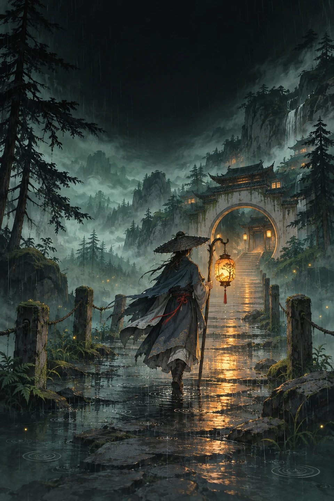

Pilih senjatamu
Dari pedang dan tombak hingga kait, cambuk, palu, dan palu meteor, 30 penjaga menghadirkan jangkauan, ritme, dan bentuk serangan yang berbeda.
Sebuah lentera di dalam kabut
Satu lentera. Satu malam. Bertahanlah hingga fajar.
Saat kabut naik, makhluk-makhluk turun melalui undakan batu. Pilih seorang penjaga, masuki gunung, dan temukan jalanmu melalui penjagaan malam yang singkat dan menegangkan.

Permainan bertahan hidup yang tenang
Pilih seorang penjaga, bergeraklah menembus gerombolan, kumpulkan pengalaman, dan bentuk setiap ekspedisi melalui berkah dan terobosan. Setiap peningkatan memerlukan pertimbangan; gelombang berikutnya akan mengujinya.
Dari pedang dan tombak hingga kait, cambuk, palu, dan palu meteor, 30 penjaga menghadirkan jangkauan, ritme, dan bentuk serangan yang berbeda.
Pilih satu dari tiga berkah setiap kali naik level. Serangan, peluang kritis, jangkauan, gerakan, dan ketahanan mengarahkan build-mu ke arah yang berbeda.
Pertempuran melawan penjaga arena terjadi setiap lima tahap. Kalahkan semua penjaga arena pada rute saat ini untuk menerobos dan berjalan lebih jauh ke dalam gunung.
Alur sebuah penjagaan
Karaktermu menyerang secara otomatis sehingga kamu dapat memusatkan perhatian pada posisi, waktu, dan keputusan berikutnya di dalam kabut.

Pilih peran yang tersedia dan cara bertarungnya, lalu pilih rute tempat kamu akan menerangi jalan pertama.
Kumpulkan pengalaman dan perlengkapan, lalu pilih berkah yang secara bertahap membentuk build berdasarkan senjata dan situasimu.
Kalahkan semua penjaga di arena untuk membuka kunci tahap. Menangkan pertempuran terakhir untuk menyelesaikan rute.
Jalan menembus kabut
Dari pelataran batu yang disinari hujan hingga perairan yang dikelilingi alang-alang, setiap rute terbuka sedikit lebih jauh. Setiap kemajuan memberi lentera berikutnya tempat untuk memulai.
Tangga batu yang berkilau karena hujan mengarah melewati gerbang gunung.
Sebelum para penjaga arena tiba, bel berbunyi.
Setelah rute dituntaskan, gerombolan terus muncul menembus kabut.
Tetaplah dalam cahaya
Mistwick Vigil berfokus pada pengalaman pemain tunggal secara luring. Saat melaporkan masalah, sertakan model perangkat, versi Android, versi aplikasi, dan langkah-langkah yang menyebabkan masalah tersebut. Mohon jangan sertakan informasi pribadi yang sensitif.
Pengaturan, konten yang telah dibuka, dan progres tetap berada di perangkatmu. Menghapus penyimpanan aplikasi atau mencopot aplikasi akan menghapusnya; data tersebut tidak disinkronkan ke cloud.
Permainan inti berfungsi secara luring. Membuka kebijakan privasi atau ketentuan layanan yang dihosting secara daring memerlukan koneksi internet.
Baca kebijakan privasi dan ketentuan layanan untuk versi saat ini.

Mistwick Vigil masih terus disempurnakan. Situs web ini beserta halaman hukumnya akan berkembang bersama game.